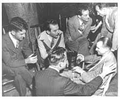

Tony is a philanthropist and philosopher. He spends his free time reading, traveling the world, exercising and living in the moment.


Whenever I went out for some social time with my boys, it almost always seemed there was an objective. “We gotta get ass tonight,” one of my boys would say. “If I don’t get chicks’ numbers tonight, I am going to be pissed the fuck off,” said another. “This better not be a sausage fest. If there is one, I am fucking leaving!” said the third anxiously.
It seemed to me that having fun was based on getting with a girl. Out of all the many things that could exist at the party, be it good food, cocktails, a good DJ, free prizes, a chance to get on stage and do an impromptu performance, and overall fun, they believed that their happiness could only occur if it was female-based.
I say, whenever you are at a party or social event, gentlemen, embrace the chorizo sausage fest. Stop running away from it because you may miss out on an opportunity to learn from those who will help you advance in your life.

It takes men to understand and help out men. The great Quintus Curtius from ROK stated in an article, “There is no better school of instruction for our own lives than in learning about the lives and trials of great men.” When I have attended events where there were majority men, instead of run out the door, I embraced it and saw it as an opportunity to network and learn from them.
I have met CEOs and entrepreneurs of all ages. They have all brought something interesting to the table. They have taught me the power of belief, how to start a business and be better resourceful with my money, or how to be a leader, learning the mannerisms of the wealthy. It was these men who I learned alphadom.
I started to frequent male dominated places. From barber shops to Bourbon tastings to members-only cigar clubs, these places gave me the opportunity to meet some top brass people of America. A great time to sample some bourbon to add to your home bar, taste the array of cigar types, and converse with men about serious to not so serious things.
These are great places to unwind and enjoy bonding with fellow masculine men. Some of these places only asked for a $10 fee, while others allowed entrance provided you bought a cigar in-store.
Through these interactions I have learned camaraderie and self-improvement. I learned self reliance, confidence, how to converse better, starting and maintaining a business and learning to deal with women. You get a global sense of knowledge when interacting with men, especially men of high caliber.
If you find yourself at a social event with a bunch of guys, don’t leave, but rather embrace the chorizo fest. See it as a time to learn from other men, maybe their flaws, insecurities and strengths. You might have been chasing women too often, leaving at any sign of too much sausage. Maybe you have had your fair share of ass for the week.
Take a break, and see the situation for what it is. Stop and embrace those who represent you, which is your masculinity. Hanging around women too often will only socially reinforce you to decrease in your masculine nature. Sometimes you need a change of pace to recharge your masculine essence. So go ahead, bond with a group of men.
You need to maintain what you were born with. Plus, you might learn a thing or two.
Read Next: Anything Women Can Do, Men Can Do Better